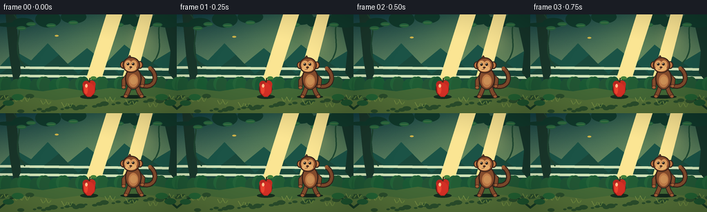
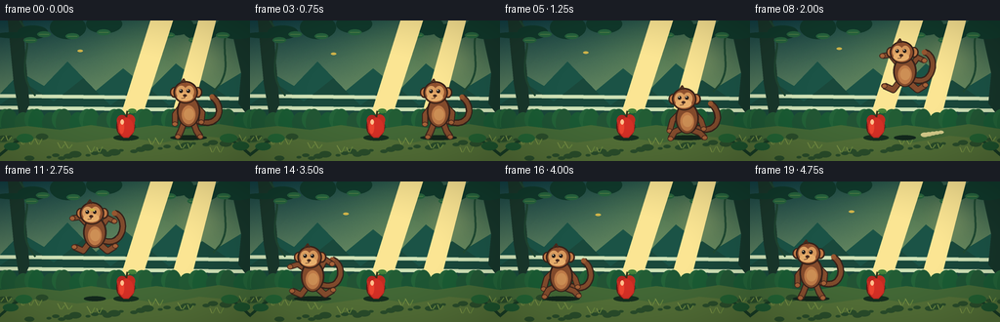
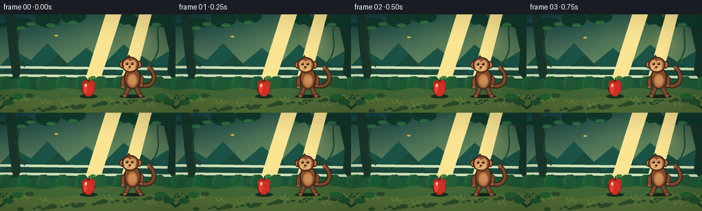
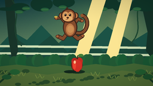

CODING AGENTS AS PIXEL WORLD MODELS
traex/GPT-5.6-Sol · dynamic_spatial_relationship_0057
点击播放 · 原生 RGB 像素
逐轮保存的候选
回放视频、检查图与代码变化。
每份候选均可单独播放。实际图片检查记录在下方工具轨迹中。
候选 01播放与检查图
点击播放 · 原生 RGB 像素

展开代码变化
--- 上一保存版本
+++ 本次保存版本
@@ -0,0 +1,300 @@
+from pathlib import Path
+import math
+import numpy as np
+from PIL import Image, ImageDraw, ImageFilter
+import artifact_io
+
+# PixelWorld: stylized hand-animated jungle jump, rendered oversize and downsampled.
+W, H, N = 256, 144, 20
+S = 4
+WW, HH = W*S, H*S
+rng = np.random.default_rng(5701)
+
+
+def sc(v):
+ return int(round(v*S))
+
+
+def box(b):
+ return tuple(sc(v) for v in b)
+
+
+def poly(points):
+ return [(sc(x), sc(y)) for x, y in points]
+
+
+def ellipse(d, b, fill, outline=None, width=1):
+ d.ellipse(box(b), fill=fill, outline=outline, width=sc(width) if outline else 1)
+
+
+def polygon(d, p, fill):
+ d.polygon(poly(p), fill=fill)
+
+
+def line(d, p, fill, width, joint='curve'):
+ d.line(poly(p), fill=fill, width=sc(width), joint=joint)
+
+
+def bezier(p0, p1, p2, p3, steps=24):
+ out=[]
+ for t in np.linspace(0, 1, steps):
+ u=1-t
+ out.append((u**3*p0[0]+3*u*u*t*p1[0]+3*u*t*t*p2[0]+t**3*p3[0],
+ u**3*p0[1]+3*u*u*t*p1[1]+3*u*t*t*p2[1]+t**3*p3[1]))
+ return out
+
+
+def background(frame):
+ # A rich but quiet teal-to-gold dawn gradient.
+ y = np.linspace(0, 1, HH, dtype=np.float32)[:, None, None]
+ top = np.array([18, 64, 69], np.float32)[None,None,:]
+ bot = np.array([157, 183, 116], np.float32)[None,None,:]
+ arr = top*(1-y) + bot*y
+ arr = np.repeat(arr, WW, axis=1)
+ xx, yy = np.meshgrid(np.arange(WW), np.arange(HH))
+ glow = np.exp(-(((xx-WW*.70)/(WW*.35))**2 + ((yy-HH*.18)/(HH*.43))**2))[:,:,None]
+ arr += glow*np.array([34,31,6],np.float32)
+ # Fixed subtle paper/forest texture, avoiding temporal noise shimmer.
+ noise = rng.normal(0, 1.2, (HH, WW, 1)).astype(np.float32)
+ arr += noise
+ im = Image.fromarray(np.uint8(np.clip(arr,0,255)), 'RGB').convert('RGBA')
+ d = ImageDraw.Draw(im, 'RGBA')
+
+ # Soft sun behind the canopy.
+ sun = Image.new('RGBA',(WW,HH),(0,0,0,0)); sd=ImageDraw.Draw(sun,'RGBA')
+ ellipse(sd,(178,8,235,65),(255,225,140,40))
+ sun=sun.filter(ImageFilter.GaussianBlur(sc(13))); im=Image.alpha_composite(im,sun)
+ d=ImageDraw.Draw(im,'RGBA')
+
+ # Distant layered hills and jungle masses.
+ polygon(d,[(0,75),(21,53),(45,67),(69,42),(98,72),(126,49),(153,71),(180,44),(216,72),(256,48),(256,113),(0,113)],(27,83,70,180))
+ polygon(d,[(0,86),(29,66),(55,83),(85,59),(113,87),(145,63),(173,87),(207,61),(237,81),(256,70),(256,120),(0,120)],(26,72,59,230))
+ # Mist bands provide depth.
+ for yy0, alpha in [(77,20),(89,23)]:
+ line(d,[(0,yy0),(256,yy0+3)],(207,225,182,alpha),4)
+
+ # Background trunks and vines.
+ polygon(d,[(8,0),(23,0),(30,86),(21,105),(14,64)],(26,55,43,220))
+ line(d,bezier((20,0),(40,24),(11,48),(36,77)),(31,70,50,180),2)
+ polygon(d,[(235,0),(256,0),(256,100),(244,85),(247,54)],(22,53,42,225))
+ line(d,bezier((241,0),(215,23),(246,47),(218,73)),(31,73,50,190),2)
+
+ # Canopy silhouettes and independently swaying leaves.
+ sway=math.sin(frame*.45)*1.3
+ clusters=[(-5,12,31,18),(18,5,49,19),(51,-5,88,19),(88,-6,125,13),
+ (161,-5,198,15),(188,3,224,20),(220,-5,266,19)]
+ for x0,y0,x1,y1 in clusters:
+ ellipse(d,(x0,y0,x1,y1),(17,58,44,245))
+ leaf_specs=[(31,20,-35),(45,14,30),(74,16,-20),(106,12,25),(172,15,-26),(200,20,31),(228,15,-21)]
+ for i,(x0,y0,ang) in enumerate(leaf_specs):
+ dx=sway*(1 if i%2 else -.7)
+ ellipse(d,(x0-7+dx,y0-3,x0+7+dx,y0+3),(39,101,63,220))
+ line(d,[(x0-5+dx,y0),(x0+5+dx,y0)],(102,142,75,140),.6)
+
+ # Light shafts.
+ polygon(d,[(154,0),(177,0),(138,121),(116,121)],(251,229,147,15))
+ polygon(d,[(203,0),(221,0),(190,121),(169,121)],(251,229,147,13))
+
+ # Midground shrubs.
+ for i,x0 in enumerate(range(-5,267,14)):
+ h=10+(i*7)%14
+ col=(26+(i%3)*4,83+(i%4)*3,52,245)
+ ellipse(d,(x0-8,99-h/2,x0+9,111+h/2),col)
+ if i%2==0:
+ ellipse(d,(x0+2,94-h/3,x0+18,108+h/3),(35,98,56,235))
+
+ # Forest floor.
+ polygon(d,[(0,111),(28,108),(62,112),(93,107),(126,112),(160,107),(191,111),(224,106),(256,111),(256,144),(0,144)],(67,104,54,255))
+ polygon(d,[(0,126),(42,120),(79,125),(123,119),(167,125),(204,118),(256,123),(256,144),(0,144)],(83,111,55,255))
+ # Ground mottles and grasses.
+ for i in range(31):
+ x0=(i*47+13)%262-3; y0=119+(i*19)%23
+ r=1.2+(i%4)*.65
+ ellipse(d,(x0-r*2,y0-r,x0+r*2,y0+r),(42,77,43,70))
+ for i in range(18):
+ x0=(i*31+8)%256; y0=123+(i%4)*4
+ line(d,[(x0,y0),(x0-2-(i%3),y0-5-(i%3))],(121,144,69,170),1)
+ line(d,[(x0+1,y0),(x0+4,y0-4-(i%2)*2)],(106,137,61,150),1)
+ return im
+
+
+def draw_apple(im):
+ # The stationary landmark: saturated red, centered and unobscured on the clearing floor.
+ d=ImageDraw.Draw(im,'RGBA')
+ ellipse(d,(116,117,142,123),(21,47,31,90))
+ # dark contour, two-lobed crown and pear-shaped lower body
+ ellipse(d,(119,97,138,120),(92,24,22,255))
+ ellipse(d,(119.4,96.8,129.8,107.5),(180,38,31,255))
+ ellipse(d,(127.1,96.3,138.2,107.4),(194,43,32,255))
+ polygon(d,[(119.8,102),(121,114.3),(126.5,120),(131.4,120),(137,114),(138,102)],(197,43,34,255))
+ ellipse(d,(121.5,100,136.5,118.7),(211,47,37,255))
+ # shaded flank and glossy highlight
+ ellipse(d,(122,102,127,116),(235,67,46,150))
+ ellipse(d,(123.3,101.2,126.8,106.5),(255,192,142,210))
+ line(d,[(129.2,99),(130.4,92.5)],(60,46,28,255),2)
+ line(d,[(129.5,94),(135,91)],(46,77,39,210),1)
+ ellipse(d,(131,90.3,139.5,95.1),(61,124,54,255))
+ line(d,[(132,92.6),(138,92.2)],(121,165,80,180),.55)
+
+
+def draw_dust(im, frame, launch=True):
+ d=ImageDraw.Draw(im,'RGBA')
+ # launch puffs around right position; landing puffs around left.
+ if launch and 5 <= frame <= 9:
+ age=frame-5; x=194-age*2.3
+ for k in range(5):
+ r=max(.2, 2.6+age*.45-k*.25)
+ px=x+(k-2)*3.1+age*(k-2)*.35
+ py=120-age*(1.0+k*.22)
+ ellipse(d,(px-r,py-r*.55,px+r,py+r*.55),(212,202,137,max(0,90-age*14-k*7)))
+ if (not launch) and 14 <= frame <= 18:
+ age=frame-14; x=64
+ for k in range(6):
+ r=max(.2,2.4+age*.55-k*.18)
+ px=x+(k-2.5)*(3+age*.55)
+ py=121-age*(.7+(k%2)*.2)
+ ellipse(d,(px-r,py-r*.5,px+r,py+r*.5),(217,205,140,max(0,100-age*17-k*6)))
+
+
+def monkey_pose(frame):
+ # Five readable beats: hold-right, anticipate, airborne arc, squash-left, settle-left.
+ if frame <= 3:
+ bob=math.sin(frame*.9)*.55
+ return 193, 94+bob, 'idle', 0.0
+ if frame <= 5:
+ q=(frame-3)/2
+ return 193-q*1.5, 94+7*q, 'crouch', q
+ if frame <= 14:
+ t=(frame-5)/9
+ e=t*t*(3-2*t)
+ x=191.5+(64-191.5)*e
+ cy=98-52*math.sin(math.pi*t)
+ return x,cy,'air',t
+ if frame <= 16:
+ q=(frame-14)/2
+ return 64-q*1.5,98+3*math.sin(math.pi*q),'land',q
+ q=(frame-16)/3
+ return 62.5,100-6*min(1,q)+math.sin(frame*.8)*.3,'idle',1.0
+
+
+def limb(d, pts, hand, width=5):
+ line(d,pts,(57,35,27,255),width+2)
+ line(d,pts,(132,76,45,255),width)
+ ellipse(d,(hand[0]-3.1,hand[1]-2.6,hand[0]+3.1,hand[1]+2.6),(77,43,29,255))
+ ellipse(d,(hand[0]-2.2,hand[1]-1.8,hand[0]+2.2,hand[1]+1.8),(166,98,56,255))
+
+
+def draw_monkey(im, cx, cy, pose, phase):
+ d=ImageDraw.Draw(im,'RGBA')
+ # Contact shadow anchors the moving monkey; its scale communicates height.
+ floorx = cx
+ altitude=max(0, 96-cy)
+ sw=max(7,19-altitude*.18)
+ alpha=int(max(25,105-altitude*1.5))
+ ellipse(d,(floorx-sw,117.5,floorx+sw,122.5),(18,40,28,alpha))
+
+ # Flexible curling tail, behind the body, with a changed curve in flight.
+ if pose=='air':
+ wave=math.sin(phase*math.pi)
+ tail=bezier((cx+8,cy+7),(cx+30,cy+16),(cx+35,cy-13-wave*5),(cx+20,cy-18-wave*3))
+ elif cx > 120:
+ tail=bezier((cx+8,cy+8),(cx+30,cy+18),(cx+39,cy-4),(cx+24,cy-16))
+ else:
+ tail=bezier((cx+8,cy+8),(cx+29,cy+19),(cx+38,cy-5),(cx+23,cy-17))
+ line(d,tail,(54,34,26,255),7)
+ line(d,tail,(128,74,44,255),4.2)
+ # Tail-tip warm rim.
+ ellipse(d,(tail[-1][0]-2.6,tail[-1][1]-2.6,tail[-1][0]+2.6,tail[-1][1]+2.6),(151,87,48,255))
+
+ # Limbs are deliberately posed rather than translating a rigid sprite.
+ if pose=='air':
+ swing=math.sin(phase*math.pi*1.2)
+ # forward/up arms and compact bent legs
+ limb(d,[(cx-7,cy-8),(cx-15,cy-15-swing*3),(cx-23,cy-13-swing*4)],(cx-23,cy-13-swing*4),4.2)
+ limb(d,[(cx+7,cy-7),(cx+13,cy-17+swing*2),(cx+20,cy-13+swing)],(cx+20,cy-13+swing),4.2)
+ limb(d,[(cx-6,cy+10),(cx-12,cy+18),(cx-21,cy+14)],(cx-21,cy+14),5)
+ limb(d,[(cx+5,cy+11),(cx+13,cy+18),(cx+21,cy+13)],(cx+21,cy+13),5)
+ elif pose in ('crouch','land'):
+ limb(d,[(cx-7,cy-7),(cx-15,cy+1),(cx-18,cy+12)],(cx-18,cy+12),4.5)
+ limb(d,[(cx+7,cy-7),(cx+14,cy+1),(cx+17,cy+10)],(cx+17,cy+10),4.5)
+ limb(d,[(cx-6,cy+10),(cx-13,cy+13),(cx-17,cy+20)],(cx-17,cy+20),5)
+ limb(d,[(cx+5,cy+11),(cx+13,cy+14),(cx+18,cy+19)],(cx+18,cy+19),5)
+ else:
+ # A jaunty balanced standing pose.
+ limb(d,[(cx-7,cy-7),(cx-14,cy+2),(cx-14,cy+12)],(cx-14,cy+12),4.5)
+ limb(d,[(cx+7,cy-7),(cx+14,cy),(cx+13,cy+10)],(cx+13,cy+10),4.5)
+ limb(d,[(cx-5,cy+11),(cx-8,cy+19),(cx-11,cy+25)],(cx-11,cy+25),5)
+ limb(d,[(cx+5,cy+11),(cx+8,cy+19),(cx+12,cy+25)],(cx+12,cy+25),5)
+
+ # Torso with dark ink-like contour and warm directional highlights.
+ ellipse(d,(cx-12,cy-17,cx+12,cy+15),(55,34,26,255))
+ ellipse(d,(cx-10.3,cy-15.5,cx+10.3,cy+14),(132,75,44,255))
+ ellipse(d,(cx-7,cy-7,cx+7,cy+12),(191,123,72,255))
+ ellipse(d,(cx-4.7,cy-4,cx+5.5,cy+8),(205,143,85,190))
+ # shoulder highlight
+ line(d,[(cx-8,cy-12),(cx-4,cy-15),(cx+2,cy-15)],(183,107,58,150),1.2)
+
+ # Head, ears, face. Head faces left (the direction of travel and the apple).
+ hx,hy=cx-3,cy-20
+ ellipse(d,(hx-16,hy-6,hx-7,hy+5),(56,34,25,255))
+ ellipse(d,(hx-14.7,hy-4.8,hx-8,hy+3.6),(190,118,67,255))
+ ellipse(d,(hx+8,hy-6,hx+17,hy+5),(56,34,25,255))
+ ellipse(d,(hx+9.2,hy-4.7,hx+15.5,hy+3.5),(190,118,67,255))
+ ellipse(d,(hx-12.5,hy-12,hx+12.5,hy+11),(54,33,25,255))
+ ellipse(d,(hx-11,hy-10.5,hx+11,hy+9.7),(142,80,46,255))
+ # heart-like pale facial mask using two cheeks and a muzzle
+ ellipse(d,(hx-9.7,hy-7.3,hx+.8,hy+5.4),(219,159,98,255))
+ ellipse(d,(hx-1.2,hy-7.2,hx+8.4,hy+5.2),(214,151,91,255))
+ ellipse(d,(hx-8.8,hy+.1,hx+7.4,hy+8.5),(231,174,108,255))
+ # Eyes look toward the left-side destination.
+ ellipse(d,(hx-6.5,hy-3.8,hx-3.1,hy+.1),(36,27,23,255))
+ ellipse(d,(hx+1.1,hy-3.8,hx+4.5,hy+.1),(36,27,23,255))
+ ellipse(d,(hx-5.7,hy-3.2,hx-4.8,hy-2.3),(255,245,212,255))
+ ellipse(d,(hx+1.8,hy-3.2,hx+2.7,hy-2.3),(255,245,212,255))
+ # Nose, smile and small forelock.
+ ellipse(d,(hx-2.8,hy+1.4,hx+1.2,hy+4),(73,43,30,255))
+ line(d,[(hx-1,hy+4),(hx-1,hy+5.2),(hx-4.2,hy+5.8)],(76,41,29,255),.7)
+ line(d,[(hx-5,hy-10),(hx-2,hy-14),(hx,hy-10.5)],(72,42,29,255),2)
+
+
+def add_foreground(im, frame):
+ d=ImageDraw.Draw(im,'RGBA')
+ # A couple of foreground leaves frame rather than cover the action.
+ sway=math.sin(frame*.38)*1.5
+ line(d,[(-2,139),(15+sway,125),(28+sway,119)],(25,61,38,230),3)
+ ellipse(d,(4+sway,125,20+sway,133),(30,86,48,245))
+ ellipse(d,(17+sway,116,34+sway,125),(35,99,52,245))
+ line(d,[(258,139),(243-sway,126),(231-sway,120)],(23,57,36,230),3)
+ ellipse(d,(238-sway,124,255-sway,133),(29,82,45,245))
+ ellipse(d,(225-sway,116,243-sway,125),(34,95,49,245))
+ # A drifting golden leaf emphasizes continuity without confusing the subject.
+ lx=82+frame*1.15; ly=31+math.sin(frame*.5)*3
+ ellipse(d,(lx-2.8,ly-1.3,lx+2.8,ly+1.3),(208,180,74,160))
+
+
+def render(frame):
+ im=background(frame)
+ cx,cy,pose,phase=monkey_pose(frame)
+ # Ground effects behind subjects, then fixed apple, then monkey.
+ draw_dust(im,frame,True)
+ draw_dust(im,frame,False)
+ draw_apple(im)
+ draw_monkey(im,cx,cy,pose,phase)
+ add_foreground(im,frame)
+ # Gentle vignette focuses the tiny 256x144 composition.
+ arr=np.asarray(im.convert('RGB')).astype(np.float32)
+ yy,xx=np.mgrid[0:HH,0:WW]
+ dx=(xx-WW/2)/(WW/2); dy=(yy-HH/2)/(HH/2)
+ vig=np.clip(1-0.12*np.maximum(0,dx*dx+dy*dy-.30),.82,1)[:,:,None]
+ arr*=vig
+ out=Image.fromarray(np.uint8(np.clip(arr,0,255))).resize((W,H),Image.Resampling.LANCZOS)
+ return np.asarray(out,dtype=np.uint8)
+
+
+def main():
+ frames=np.stack([render(i) for i in range(N)],axis=0)
+ artifact_io.save(frames,Path(__file__).resolve().parent)
+
+
+if __name__=='__main__':
+ main()
候选 02播放与检查图
点击播放 · 原生 RGB 像素


展开代码变化
--- 上一保存版本
+++ 本次保存版本
@@ -9,6 +9,7 @@
S = 4
WW, HH = W*S, H*S
rng = np.random.default_rng(5701)
+STATIC_TEXTURE = rng.normal(0, 1.2, (HH, WW, 1)).astype(np.float32)
def sc(v):
@@ -55,9 +56,8 @@
glow = np.exp(-(((xx-WW*.70)/(WW*.35))**2 + ((yy-HH*.18)/(HH*.43))**2))[:,:,None]
arr += glow*np.array([34,31,6],np.float32)
# Fixed subtle paper/forest texture, avoiding temporal noise shimmer.
- noise = rng.normal(0, 1.2, (HH, WW, 1)).astype(np.float32)
- arr += noise
- im = Image.fromarray(np.uint8(np.clip(arr,0,255)), 'RGB').convert('RGBA')
+ arr += STATIC_TEXTURE
+ im = Image.fromarray(np.uint8(np.clip(arr,0,255))).convert('RGBA')
d = ImageDraw.Draw(im, 'RGBA')
# Soft sun behind the canopy.
可观测工具轨迹
实际执行的命令与返回图片。
命令 1exit 0
/bin/bash -lc "cat prompt.txt && printf '\\n--- GENERATION_RULES ---\\n' && cat GENERATION_RULES.md"
命令 2exit 0
/bin/bash -lc "cat task_spec.json && printf '\\n--- FILES ---\\n' && find . -maxdepth 2 -type f -printf '%p\\n' | sort"
命令 3exit 0
/bin/bash -lc "command -v ffmpeg; command -v python3; python3 - <<'PY' mods=['PIL','numpy','cv2','imageio'] for m in mods: try: x=__import__(m); print(m,'OK',getattr(x,'__version__','')) except Exception as e: print(m,'NO',e) PY"
命令 4exit 0
/bin/bash -lc 'cat artifact_io.py'
命令 5exit 0
/bin/bash -lc "cat > generate.py <<'PY'
from pathlib import Path
import math
import numpy as np
from PIL import Image, ImageDraw, ImageFilter
import artifact_io
# PixelWorld: stylized hand-animated jungle jump, rendered oversize and downsampled.
W, H, N = 256, 144, 20
S = 4
WW, HH = W*S, H*S
rng = np.random.default_rng(5701)
def sc(v):
return int(round(v*S))
def box(b):
return tuple(sc(v) for v in b)
def poly(points):
return [(sc(x), sc(y)) for x, y in points]
def ellipse(d, b, fill, outline=None, width=1):
d.ellipse(box(b), fill=fill, outline=outline, width=sc(width) if outline else 1)
def polygon(d, p, fill):
d.polygon(poly(p), fill=fill)
def line(d, p, fill, width, joint='curve'):
d.line(poly(p), fill=fill, width=sc(width), joint=joint)
def bezier(p0, p1, p2, p3, steps=24):
out=[]
for t in np.linspace(0, 1, steps):
u=1-t
out.append((u**3*p0[0]+3*u*u*t*p1[0]+3*u*t*t*p2[0]+t**3*p3[0],
u**3*p0[1]+3*u*u*t*p1[1]+3*u*t*t*p2[1]+t**3*p3[1]))
return out
def background(frame):
# A rich but quiet teal-to-gold dawn gradient.
y = np.linspace(0, 1, HH, dtype=np.float32)[:, None, None]
top = np.array([18, 64, 69], np.float32)[None,None,:]
bot = np.array([157, 183, 116], np.float32)[None,None,:]
arr = top*(1-y) + bot*y
arr = np.repeat(arr, WW, axis=1)
xx, yy = np.meshgrid(np.arange(WW), np.arange(HH))
glow = np.exp(-(((xx-WW*.70)/(WW*.35))**2 + ((yy-HH*.18)/(HH*.43))**2))[:,:,None]
arr += glow*np.array([34,31,6],np.float32)
# Fixed subtle paper/forest texture, avoiding temporal noise shimmer.
noise = rng.normal(0, 1.2, (HH, WW, 1)).astype(np.float32)
arr += noise
im = Image.fromarray(np.uint8(np.clip(arr,0,255)), 'RGB').convert('RGBA')
d = ImageDraw.Draw(im, 'RGBA')
# Soft sun behind the canopy.
sun = Image.new('RGBA',(WW,HH),(0,0,0,0)); sd=ImageDraw.Draw(sun,'RGBA')
ellipse(sd,(178,8,235,65),(255,225,140,40))
sun=sun.filter(ImageFilter.GaussianBlur(sc(13))); im=Image.alpha_composite(im,sun)
d=ImageDraw.Draw(im,'RGBA')
# Distant layered hills and jungle masses.
polygon(d,[(0,75),(21,53),(45,67),(69,42),(98,72),(126,49),(153,71),(180,44),(216,72),(256,48),(256,113),(0,113)],(27,83,70,180))
polygon(d,[(0,86),(29,66),(55,83),(85,59),(113,87),(145,63),(173,87),(207,61),(237,81),(256,70),(256,120),(0,120)],(26,72,59,230))
# Mist bands provide depth.
for yy0, alpha in [(77,20),(89,23)]:
line(d,[(0,yy0),(256,yy0+3)],(207,225,182,alpha),4)
# Background trunks and vines.
polygon(d,[(8,0),(23,0),(30,86),(21,105),(14,64)],(26,55,43,220))
line(d,bezier((20,0),(40,24),(11,48),(36,77)),(31,70,50,180),2)
polygon(d,[(235,0),(256,0),(256,100),(244,85),(247,54)],(22,53,42,225))
line(d,bezier((241,0),(215,23),(246,47),(218,73)),(31,73,50,190),2)
# Canopy silhouettes and independently swaying leaves.
sway=math.sin(frame*.45)*1.3
clusters=[(-5,12,31,18),(18,5,49,19),(51,-5,88,19),(88,-6,125,13),
(161,-5,198,15),(188,3,224,20),(220,-5,266,19)]
for x0,y0,x1,y1 in clusters:
ellipse(d,(x0,y0,x1,y1),(17,58,44,245))
leaf_specs=[(31,20,-35),(45,14,30),(74,16,-20),(106,12,25),(172,15,-26),(200,20,31),(228,15,-21)]
for i,(x0,y0,ang) in enumerate(leaf_specs):
dx=sway*(1 if i%2 else -.7)
ellipse(d,(x0-7+dx,y0-3,x0+7+dx,y0+3),(39,101,63,220))
line(d,[(x0-5+dx,y0),(x0+5+dx,y0)],(102,142,75,140),.6)
# Light shafts.
polygon(d,[(154,0),(177,0),(138,121),(116,121)],(251,229,147,15))
polygon(d,[(203,0),(221,0),(190,121),(169,121)],(251,229,147,13))
# Midground shrubs.
for i,x0 in enumerate(range(-5,267,14)):
h=10+(i*7)%14
col=(26+(i%3)*4,83+(i%4)*3,52,245)
ellipse(d,(x0-8,99-h/2,x0+9,111+h/2),col)
if i%2==0:
ellipse(d,(x0+2,94-h/3,x0+18,108+h/3),(35,98,56,235))
# Forest floor.
polygon(d,[(0,111),(28,108),(62,112),(93,107),(126,112),(160,107),(191,111),(224,106),(256,111),(256,144),(0,144)],(67,104,54,255))
polygon(d,[(0,126),(42,120),(79,125),(123,119),(167,125),(204,118),(256,123),(256,144),(0,144)],(83,111,55,255))
# Ground mottles and grasses.
for i in range(31):
x0=(i*47+13)%262-3; y0=119+(i*19)%23
r=1.2+(i%4)*.65
ellipse(d,(x0-r*2,y0-r,x0+r*2,y0+r),(42,77,43,70))
for i in range(18):
x0=(i*31+8)%256; y0=123+(i%4)*4
line(d,[(x0,y0),(x0-2-(i%3),y0-5-(i%3))],(121,144,69,170),1)
line(d,[(x0+1,y0),(x0+4,y0-4-(i%2)*2)],(106,137,61,150),1)
return im
def draw_apple(im):
# The stationary landmark: saturated red, centered and unobscured on the clearing floor.
d=ImageDraw.Draw(im,'RGBA')
ellipse(d,(116,117,142,123),(21,47,31,90))
# dark contour, two-lobed crown and pear-shaped lower body
ellipse(d,(119,97,138,120),(92,24,22,255))
ellipse(d,(119.4,96.8,129.8,107.5),(180,38,31,255))
ellipse(d,(127.1,96.3,138.2,107.4),(194,43,32,255))
polygon(d,[(119.8,102),(121,114.3),(126.5,120),(131.4,120),(137,114),(138,102)],(197,43,34,255))
ellipse(d,(121.5,100,136.5,118.7),(211,47,37,255))
# shaded flank and glossy highlight
ellipse(d,(122,102,127,116),(235,67,46,150))
ellipse(d,(123.3,101.2,126.8,106.5),(255,192,142,210))
line(d,[(129.2,99),(130.4,92.5)],(60,46,28,255),2)
line(d,[(129.5,94),(135,91)],(46,77,39,210),1)
ellipse(d,(131,90.3,139.5,95.1),(61,124,54,255))
line(d,[(132,92.6),(138,92.2)],(121,165,80,180),.55)
def draw_dust(im, frame, launch=True):
d=ImageDraw.Draw(im,'RGBA')
# launch puffs around right position; landing puffs around left.
if launch and 5 <= frame <= 9:
age=frame-5; x=194-age*2.3
for k in range(5):
r=max(.2, 2.6+age*.45-k*.25)
px=x+(k-2)*3.1+age*(k-2)*.35
py=120-age*(1.0+k*.22)
ellipse(d,(px-r,py-r*.55,px+r,py+r*.55),(212,202,137,max(0,90-age*14-k*7)))
if (not launch) and 14 <= frame <= 18:
age=frame-14; x=64
for k in range(6):
r=max(.2,2.4+age*.55-k*.18)
px=x+(k-2.5)*(3+age*.55)
py=121-age*(.7+(k%2)*.2)
ellipse(d,(px-r,py-r*.5,px+r,py+r*.5),(217,205,140,max(0,100-age*17-k*6)))
def monkey_pose(frame):
# Five readable beats: hold-right, anticipate, airborne arc, squash-left, settle-left.
if frame <= 3:
bob=math.sin(frame*.9)*.55
return 193, 94+bob, 'idle', 0.0
if frame <= 5:
q=(frame-3)/2
return 193-q*1.5, 94+7*q, 'crouch', q
if frame <= 14:
t=(frame-5)/9
e=t*t*(3-2*t)
x=191.5+(64-191.5)*e
cy=98-52*math.sin(math.pi*t)
return x,cy,'air',t
if frame <= 16:
q=(frame-14)/2
return 64-q*1.5,98+3*math.sin(math.pi*q),'land',q
q=(frame-16)/3
return 62.5,100-6*min(1,q)+math.sin(frame*.8)*.3,'idle',1.0
def limb(d, pts, hand, width=5):
line(d,pts,(57,35,27,255),width+2)
line(d,pts,(132,76,45,255),width)
ellipse(d,(hand[0]-3.1,hand[1]-2.6,hand[0]+3.1,hand[1]+2.6),(77,43,29,255))
ellipse(d,(hand[0]-2.2,hand[1]-1.8,hand[0]+2.2,hand[1]+1.8),(166,98,56,255))
def draw_monkey(im, cx, cy, pose, phase):
d=ImageDraw.Draw(im,'RGBA')
# Contact shadow anchors the moving monkey; its scale communicates height.
floorx = cx
altitude=max(0, 96-cy)
sw=max(7,19-altitude*.18)
alpha=int(max(25,105-altitude*1.5))
ellipse(d,(floorx-sw,117.5,floorx+sw,122.5),(18,40,28,alpha))
# Flexible curling tail, behind the body, with a changed curve in flight.
if pose=='air':
wave=math.sin(phase*math.pi)
tail=bezier((cx+8,cy+7),(cx+30,cy+16),(cx+35,cy-13-wave*5),(cx+20,cy-18-wave*3))
elif cx > 120:
tail=bezier((cx+8,cy+8),(cx+30,cy+18),(cx+39,cy-4),(cx+24,cy-16))
else:
tail=bezier((cx+8,cy+8),(cx+29,cy+19),(cx+38,cy-5),(cx+23,cy-17))
line(d,tail,(54,34,26,255),7)
line(d,tail,(128,74,44,255),4.2)
# Tail-tip warm rim.
ellipse(d,(tail[-1][0]-2.6,tail[-1][1]-2.6,tail[-1][0]+2.6,tail[-1][1]+2.6),(151,87,48,255))
# Limbs are deliberately posed rather than translating a rigid sprite.
if pose=='air':
swing=math.sin(phase*math.pi*1.2)
# forward/up arms and compact bent legs
limb(d,[(cx-7,cy-8),(cx-15,cy-15-swing*3),(cx-23,cy-13-swing*4)],(cx-23,cy-13-swing*4),4.2)
limb(d,[(cx+7,cy-7),(cx+13,cy-17+swing*2),(cx+20,cy-13+swing)],(cx+20,cy-13+swing),4.2)
limb(d,[(cx-6,cy+10),(cx-12,cy+18),(cx-21,cy+14)],(cx-21,cy+14),5)
limb(d,[(cx+5,cy+11),(cx+13,cy+18),(cx+21,cy+13)],(cx+21,cy+13),5)
elif pose in ('crouch','land'):
limb(d,[(cx-7,cy-7),(cx-15,cy+1),(cx-18,cy+12)],(cx-18,cy+12),4.5)
limb(d,[(cx+7,cy-7),(cx+14,cy+1),(cx+17,cy+10)],(cx+17,cy+10),4.5)
limb(d,[(cx-6,cy+10),(cx-13,cy+13),(cx-17,cy+20)],(cx-17,cy+20),5)
limb(d,[(cx+5,cy+11),(cx+13,cy+14),(cx+18,cy+19)],(cx+18,cy+19),5)
else:
# A jaunty balanced standing pose.
limb(d,[(cx-7,cy-7),(cx-14,cy+2),(cx-14,cy+12)],(cx-14,cy+12),4.5)
limb(d,[(cx+7,cy-7),(cx+14,cy),(cx+13,cy+10)],(cx+13,cy+10),4.5)
limb(d,[(cx-5,cy+11),(cx-8,cy+19),(cx-11,cy+25)],(cx-11,cy+25),5)
limb(d,[(cx+5,cy+11),(cx+8,cy+19),(cx+12,cy+25)],(cx+12,cy+25),5)
# Torso with dark ink-like contour and warm directional highlights.
ellipse(d,(cx-12,cy-17,cx+12,cy+15),(55,34,26,255))
ellipse(d,(cx-10.3,cy-15.5,cx+10.3,cy+14),(132,75,44,255))
ellipse(d,(cx-7,cy-7,cx+7,cy+12),(191,123,72,255))
ellipse(d,(cx-4.7,cy-4,cx+5.5,cy+8),(205,143,85,190))
# shoulder highlight
line(d,[(cx-8,cy-12),(cx-4,cy-15),(cx+2,cy-15)],(183,107,58,150),1.2)
# Head, ears, face. Head faces left (the direction of travel and the apple).
hx,hy=cx-3,cy-20
ellipse(d,(hx-16,hy-6,hx-7,hy+5),(56,34,25,255))
ellipse(d,(hx-14.7,hy-4.8,hx-8,hy+3.6),(190,118,67,255))
ellipse(d,(hx+8,hy-6,hx+17,hy+5),(56,34,25,255))
ellipse(d,(hx+9.2,hy-4.7,hx+15.5,hy+3.5),(190,118,67,255))
ellipse(d,(hx-12.5,hy-12,hx+12.5,hy+11),(54,33,25,255))
ellipse(d,(hx-11,hy-10.5,hx+11,hy+9.7),(142,80,46,255))
# heart-like pale facial mask using two cheeks and a muzzle
ellipse(d,(hx-9.7,hy-7.3,hx+.8,hy+5.4),(219,159,98,255))
ellipse(d,(hx-1.2,hy-7.2,hx+8.4,hy+5.2),(214,151,91,255))
ellipse(d,(hx-8.8,hy+.1,hx+7.4,hy+8.5),(231,174,108,255))
# Eyes look toward the left-side destination.
ellipse(d,(hx-6.5,hy-3.8,hx-3.1,hy+.1),(36,27,23,255))
ellipse(d,(hx+1.1,hy-3.8,hx+4.5,hy+.1),(36,27,23,255))
ellipse(d,(hx-5.7,hy-3.2,hx-4.8,hy-2.3),(255,245,212,255))
ellipse(d,(hx+1.8,hy-3.2,hx+2.7,hy-2.3),(255,245,212,255))
# Nose, smile and small forelock.
ellipse(d,(hx-2.8,hy+1.4,hx+1.2,hy+4),(73,43,30,255))
line(d,[(hx-1,hy+4),(hx-1,hy+5.2),(hx-4.2,hy+5.8)],(76,41,29,255),.7)
line(d,[(hx-5,hy-10),(hx-2,hy-14),(hx,hy-10.5)],(72,42,29,255),2)
def add_foreground(im, frame):
d=ImageDraw.Draw(im,'RGBA')
# A couple of foreground leaves frame rather than cover the action.
sway=math.sin(frame*.38)*1.5
line(d,[(-2,139),(15+sway,125),(28+sway,119)],(25,61,38,230),3)
ellipse(d,(4+sway,125,20+sway,133),(30,86,48,245))
ellipse(d,(17+sway,116,34+sway,125),(35,99,52,245))
line(d,[(258,139),(243-sway,126),(231-sway,120)],(23,57,36,230),3)
ellipse(d,(238-sway,124,255-sway,133),(29,82,45,245))
ellipse(d,(225-sway,116,243-sway,125),(34,95,49,245))
# A drifting golden leaf emphasizes continuity without confusing the subject.
lx=82+frame*1.15; ly=31+math.sin(frame*.5)*3
ellipse(d,(lx-2.8,ly-1.3,lx+2.8,ly+1.3),(208,180,74,160))
def render(frame):
im=background(frame)
cx,cy,pose,phase=monkey_pose(frame)
# Ground effects behind subjects, then fixed apple, then monkey.
draw_dust(im,frame,True)
draw_dust(im,frame,False)
draw_apple(im)
draw_monkey(im,cx,cy,pose,phase)
add_foreground(im,frame)
# Gentle vignette focuses the tiny 256x144 composition.
arr=np.asarray(im.convert('RGB')).astype(np.float32)
yy,xx=np.mgrid[0:HH,0:WW]
dx=(xx-WW/2)/(WW/2); dy=(yy-HH/2)/(HH/2)
vig=np.clip(1-0.12*np.maximum(0,dx*dx+dy*dy-.30),.82,1)[:,:,None]
arr*=vig
out=Image.fromarray(np.uint8(np.clip(arr,0,255))).resize((W,H),Image.Resampling.LANCZOS)
return np.asarray(out,dtype=np.uint8)
def main():
frames=np.stack([render(i) for i in range(N)],axis=0)
artifact_io.save(frames,Path(__file__).resolve().parent)
if __name__=='__main__':
main()
PY
python3 generate.py
ls -lh pixels.npz inspection.png index.html frames/00.png frames/10.png frames/19.png"命令 6exit 0
/bin/bash -lc "python3 - <<'PY'
import numpy as np
from PIL import Image
from pathlib import Path
z=np.load('pixels.npz')['pixels']
print('npz',z.shape,z.dtype,'range',z.min(),z.max())
for i in [0,3,5,7,10,12,14,16,19]:
a=np.array(Image.open(f'frames/{i:02d}.png'))
print(i,a.shape,a.dtype,a.mean().round(2),len(np.unique(a.reshape(-1,3),axis=0)))
PY"命令 7exit 0
/bin/bash -lc "python3 generate.py && python3 - <<'PY'
from pathlib import Path
import numpy as np
from PIL import Image
p=Path('.')
files=sorted((p/'frames').glob('*.png'))
assert len(files)==20, len(files)
a=np.stack([np.asarray(Image.open(x).convert('RGB')) for x in files])
assert a.shape==(20,144,256,3) and a.dtype==np.uint8
z=np.load(p/'pixels.npz')['pixels']
assert z.shape==(144,256,20) and z.dtype==np.uint32
# Quantify expected scene progression and non-static animation.
diffs=np.mean(np.abs(a[1:].astype(np.int16)-a[:-1].astype(np.int16)),axis=(1,2,3))
print('validated frames:',a.shape,a.dtype,'npz:',z.shape,z.dtype)
print('adjacent RGB mean deltas:',np.round(diffs,2).tolist())
print('outputs:',*(f'{x}={Path(x).stat().st_size}' for x in ['pixels.npz','index.html','inspection.png']))
PY"视觉工具实际返回图片 1

视觉工具实际返回图片 2

保存候选 2 份；完成命令 7 次；可验证图片返回 2 张。原始 API 响应与完整日志保留在本地。